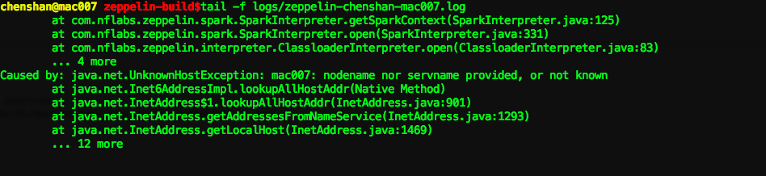
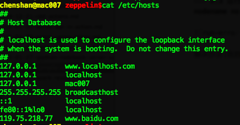

［touch spark］9. 编译Zeppelin
2015-01-29
1. 写在前面
这篇记录是我按照官网的步骤来写的，主要是记录在编译Zeppelin过程中的一些经验。
对于这类没有发布特别稳定版本的项目，我倾向于这样一种实践方法，在本地建两个文件夹：project, project-build，把project文件夹作为一个本地的repo，可以随时update到最新的源码，然后在project-build里构建，就算失败了也可以保证不会污染项目源文件。
再具体一点就是我在实践Zeppelin的时候使用的方法，如下所示，可以随时保证zeppelin文件夹里的源码最新，然后在zeppelin-build里用最新的源码构建。
root@kali:~/Desktop# mkdir zeppelin zeppelin-build
root@kali:~/Desktop# cd zeppelin
root@kali:~/Desktop/zeppelin# git init
Initialized empty Git repository in /root/Desktop/zeppelin/.git/
root@kali:~/Desktop/zeppelin# git remote add origin git@github.com:NFLabs/zeppelin.git
root@kali:~/Desktop/zeppelin# git pull origin master
root@kali:~/Desktop/zeppelin# cd ../zeppelin-build/
root@kali:~/Desktop/zeppelin-build# cp -R ../zeppelin/* .
root@kali:~/Desktop/zeppelin-build# mvn clean package -DskipTests
2. 详细步骤及错误解决
2.1 按照默认配置编译 : mvn clean package -DskipTests
root@ubuntu2[15:30:17]:~/Desktop/zeppelin-build#mvn clean package -DskipTests
.
.
.
[INFO] npm WARN deprecated grunt-ngmin@0.0.3: use grunt-ng-annotate instead
[INFO] npm ERR!
[INFO] npm ERR! Additional logging details can be found in:
[INFO] npm ERR! /root/Desktop/zeppelin-build/zeppelin-web/npm-debug.log
[INFO] npm ERR! not ok code 0
[INFO] ------------------------------------------------------------------------
[INFO] Reactor Summary:
[INFO]
[INFO] Zeppelin ........................................... SUCCESS [ 37.320 s]
[INFO] Zeppelin: Zengine .................................. SUCCESS [ 9.899 s]
[INFO] Zeppelin: Spark .................................... SUCCESS [ 12.115 s]
[INFO] Zeppelin: Markdown interpreter ..................... SUCCESS [ 2.257 s]
[INFO] Zeppelin: Shell interpreter ........................ SUCCESS [ 2.239 s]
[INFO] Zeppelin: web Application .......................... FAILURE [04:10 min]
[INFO] Zeppelin: Server ................................... SKIPPED
[INFO] Zeppelin: Packaging distribution ................... SKIPPED
[INFO] ------------------------------------------------------------------------
[INFO] BUILD FAILURE
[INFO] ------------------------------------------------------------------------
[INFO] Total time: 05:15 min
[INFO] Finished at: 2015-02-11T15:30:16+08:00
[INFO] Final Memory: 61M/409M
[INFO] ------------------------------------------------------------------------
[ERROR] Failed to execute goal com.github.eirslett:frontend-maven-plugin:0.0.20:npm (npm install) on project zeppelin-web: Failed to run task: 'npm install --color=false' failed. (error code 1) -> [Help 1]
[ERROR]
[ERROR] To see the full stack trace of the errors, re-run Maven with the -e switch.
[ERROR] Re-run Maven using the -X switch to enable full debug logging.
[ERROR]
[ERROR] For more information about the errors and possible solutions, please read the following articles:
[ERROR] [Help 1] http://cwiki.apache.org/confluence/display/MAVEN/MojoFailureException
[ERROR]
[ERROR] After correcting the problems, you can resume the build with the command
[ERROR] mvn <goals> -rf :zeppelin-web
2.1 出错: npm install --color=false
这个错误在mailing list里提到了，我们按照里面的解决方案来尝试一下。注意，以前的mailing list的维护在google groups里面的，但今年2月份之后groups就只读，不可以发帖了，新的mailing list移植到apache旗下，地址在这里。
解决方案：先在zeppelin-web文件夹里运行 npm install，然后再回到zeppelin-build目录构建。
2.2 启动zeppelin服务器错误，提示Unsupported major.minor
在运行 bin/zeppelin-daemon.sh start 的时候提示错误如下。一开始没有发现什么原因，后来google 关键字 nsupported major.minor后在这里知道问题应该和JAVA编译器的版本有问题，因为zeppelin需要java 1.7以上，我本机是java 1.6的，当时为了编译zeppelin我自己下了java 1.7和设置了一个java 1.7的环境变量文件，应该是没有source这个环境变量吧，测试一下发现$JAVA_HOME这个环境变量为空。这里再次source一下java_1.7_path.bashrc这个文件就可以了，这个文件是这样写的：
root@ubuntu2[10:59:24]:~/Desktop#cat java_1.7_path.bashrc
export PATH=/usr/local/jdk1.7.0_71/bin:$PATH
export CLASSPATH="/usr/local/jdk1.7.0_71/lib:."
export JAVA_HOME="/usr/local/jdk1.7.0_71/"
root@ubuntu2[10:51:15]:~/Desktop/zeppelin-build#vi logs/zeppelin-root-ubuntu2.out
Exception in thread "main" java.lang.UnsupportedClassVersionError: com/nflabs/zeppelin/
server/ZeppelinServer : Unsupported major.minor version 51.0
at java.lang.ClassLoader.defineClass1(Native Method)
at java.lang.ClassLoader.defineClass(ClassLoader.java:643)
at java.security.SecureClassLoader.defineClass(SecureClassLoader.java:142)
at java.net.URLClassLoader.defineClass(URLClassLoader.java:277)
at java.net.URLClassLoader.access$000(URLClassLoader.java:73)
at java.net.URLClassLoader$1.run(URLClassLoader.java:212)
at java.security.AccessController.doPrivileged(Native Method)
at java.net.URLClassLoader.findClass(URLClassLoader.java:205)
at java.lang.ClassLoader.loadClass(ClassLoader.java:323)
at sun.misc.Launcher$AppClassLoader.loadClass(Launcher.java:294)
at java.lang.ClassLoader.loadClass(ClassLoader.java:268)
Could not find the main class: com.nflabs.zeppelin.server.ZeppelinServer. Program will
exit.
2.3 运行出错，日志提示：java.net.UnknownHostException:

解决办法[我的机器host名叫mac007]，修改/etc/hosts，新增一项 127.0.0.1 mac007

2.4 RDD Action 出错，提示：java.io.IOException: Failed on local exception: com.google.protobuf.InvalidProtocolBufferException: Protocol message contained an invalid tag (zero).; Host Details : local host is: "ubuntu2/10.20.70.80"; destination host is: "sh-demo-hadoop-01":8020;

原因是我是连接到公司spark集群的，截图里可以看到，公司spark集群的hadoop版本和我当时编译zeppelin是定义的hadoop版本不一致。公司spark集群的hadoop版本是：Hadoop 2.0.0-cdh4.5.0，而我当时编译zeppelin时的命令是：mvn clean package -Pspark-1.2 -Dhadoop.version=2.2.0 -Phadoop-2.2 -DskipTests。
解决办法就是重新拉zeppelin最新源码，然后用如下命令再次编译了：mvn clean package -Pspark-1.2 -Dhadoop.version=2.0.0-cdh4.5.0 -Phadoop-2.0 -DskipTests
扫一扫